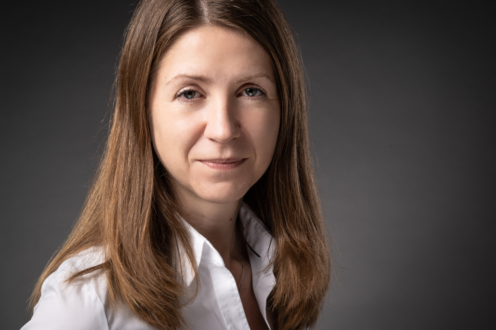
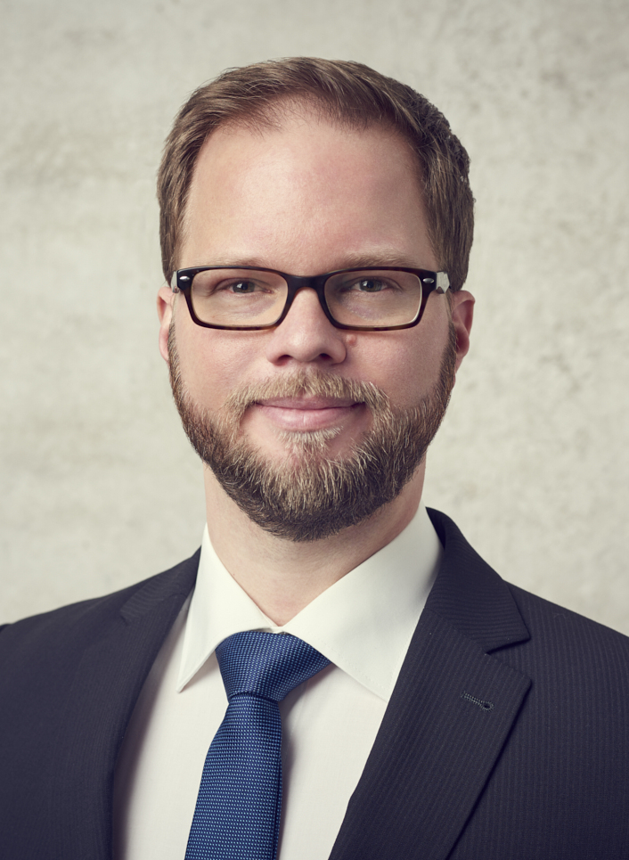
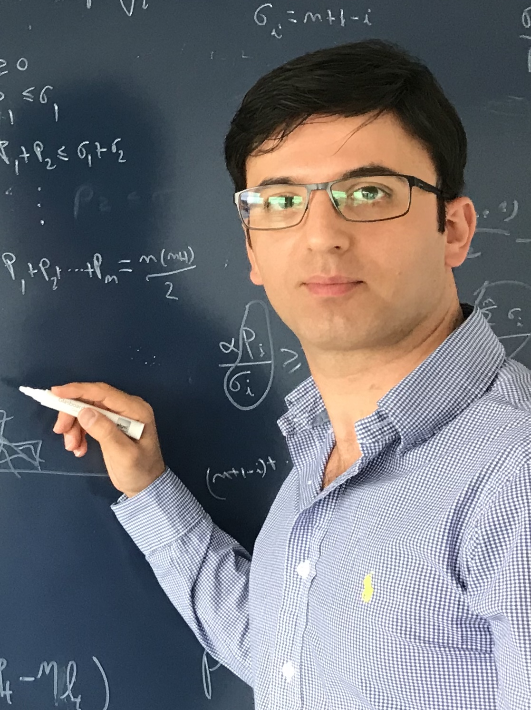
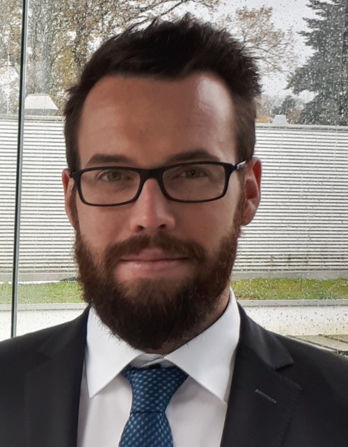
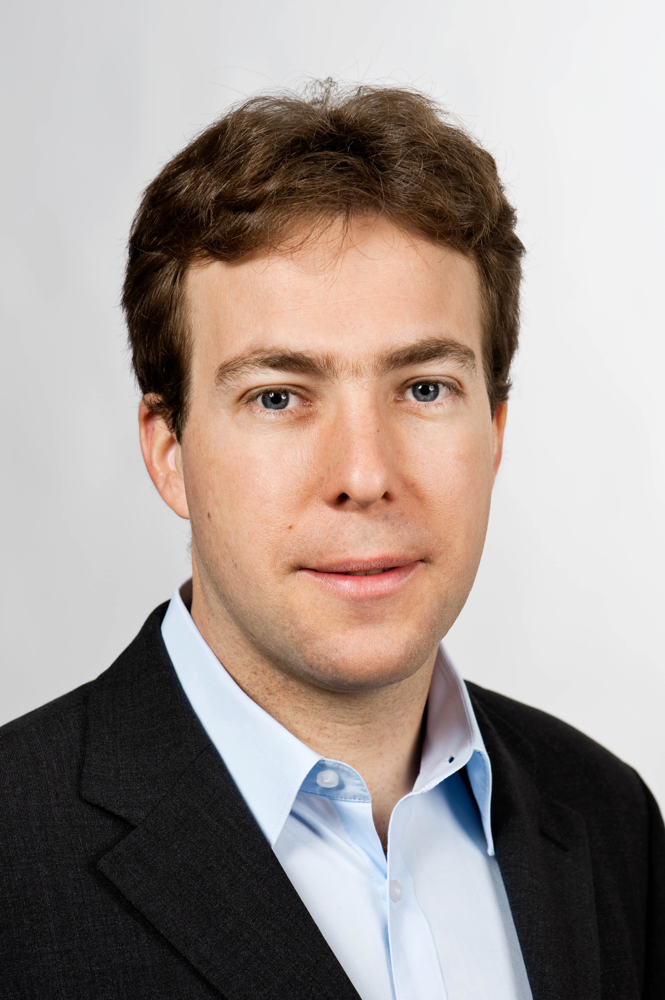

- Cognitive Vehicles Workshop // IROS 2019
- Home
- News
- Program
- Speakers
- Call for papers
- Organizers


Yulia Sandamirskaya is a Group Leader in the Institute of Neuroinformatics (INI) at the University of Zurich and ETH Zurich. Her group “Neuromorphic Cognitive Robots” develops neuro-dynamic architectures for embodied cognitive agents. In particular, she studies memory formation, motor control, and autonomous learning in spiking and continuous neural networks, realised in neuromorphic hardware interfaced to robotic sensors and motors. She has a degree in Physics from the Belorussian State University in Minsk, Belarus and Dr. rer. nat. from the Institute for Neural Computation in Bochum, Germany. She is the chair of EUCOG — the European Society for Cognitive Systems and the coordinator of the NEUROTECH project that supports and develops the neuromorphic computing community in Europe.

Florian Mirus is a Research Scientist in the team AI, Robotics, Cognitive Systems at BMW Research, New Technologies, Innovations Garching, Germany working on neuromorphic computing, power efficient computing for AI, machine learning and robotics. After working several years on mobile robotics research at Fraunhofer Institute for manufacturing, engineering and automation (IPA), he is currently working towards the PhD degree with joint supervision from Technical University Munich, Germany and BMW. His research is focused on neuromorphic computing, cognitive modeling for kowledge representation of automotive scenes and machine learning in the context of automated driving. His initial training was in mathematics and computer science. He received his diploma degree in mathematics from Heidelberg University in 2011.

Mohsen Kaboli is an IEEE senior member and senior research scientist in robotics, visio-tactile intelligence, and machine learning at the BMW research department in Germany. Prior to that, he was a postdoctoral research associate and Hans-Fisher fellow at the institute for advanced study (IAS) at the Technical University of Munich. He was awarded a Ph.D. degree in robotics and tactile intelligence with the highest distinction (summa cum laude) from the Technical University of Munich (TUM) in 2017. He was a finalist for the 2018 Georges Giralt Ph.D. The award for the best robotics Ph.D. thesis in Europe.

Nicolai Waniek is a research scientist at the Bosch Center for Artificial Intelligence in Renningen, Germany, where he currently works on manipulation robotics and visual perception. He has a particular interest in the theory and algorithms of spiking neural networks and higher cortical computations, distributed message passed systems, and self-organization in dynamical systems. Before joining Bosch he was with the Neuroscientific System Theory, TU Munich, Germany. There, he conducted research on rodent spatial navigation and memory, neuro-robotics, event-based vision, and developed a novel model for place and grid cells. He holds a Diploma in Computer Science from Ulm University, and received the Dr.rer.nat. from TU Munich. He's also trained as a professional software developer.

Jörg Conradt is an Associate Professor at Computational Science and Technology, KTH, Stockholm. Understanding and applying the computational principles behind how brains turn perception into behavior is one of the most challenging research questions for the upcoming decades. His research investigates theory, models, and implementations of distributed neuronal information processing, to (a) discover key principles by which large networks of neurons operate and to (b) implement those in engineered systems to enhance their real-world and real-time performance. He holds an M.S. degree in Computer Science/Robotics from the University of Southern California, a Diploma in Computer Engineering from TU Berlin, and a Ph.D. in Physics/Neuroscience from ETH Zurich.